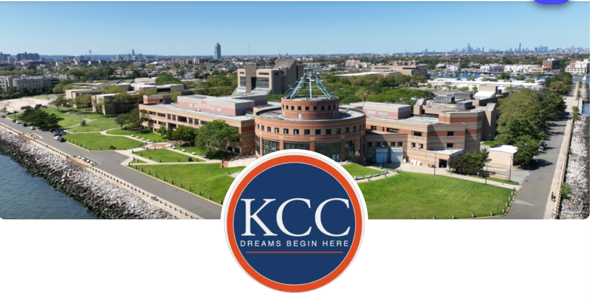

Bronx Community College
Digital Design
Degree: A.A.S.
Prepares students for the dynamic field of digital design by providing a basic career-oriented education.
Learn MoreHostos Community College
Digital Design & Animation
Degree: A.A.S.
Provides students with a strong foundation for future occupations in graphic design, animation, motion graphics, and/or web design..
Learn More

Kingsborough Community College
Graphic Design & Illustration
Degree: A.S.
A hands-on program focused on foundational skills in visual communication and illustration.
Learn More
Borough of Manhattan Community College (BMCC)
Multimedia Programming and Design
Degree: A.S.
Prepares students for careers in companies and organizations that develop, produce, or market multimedia content.
Learn More
Queensborough Community College
Digital Art and Design
Degree: A.S.
Structured to prepare students to enter the expanding field of new media and digital design.
Learn More